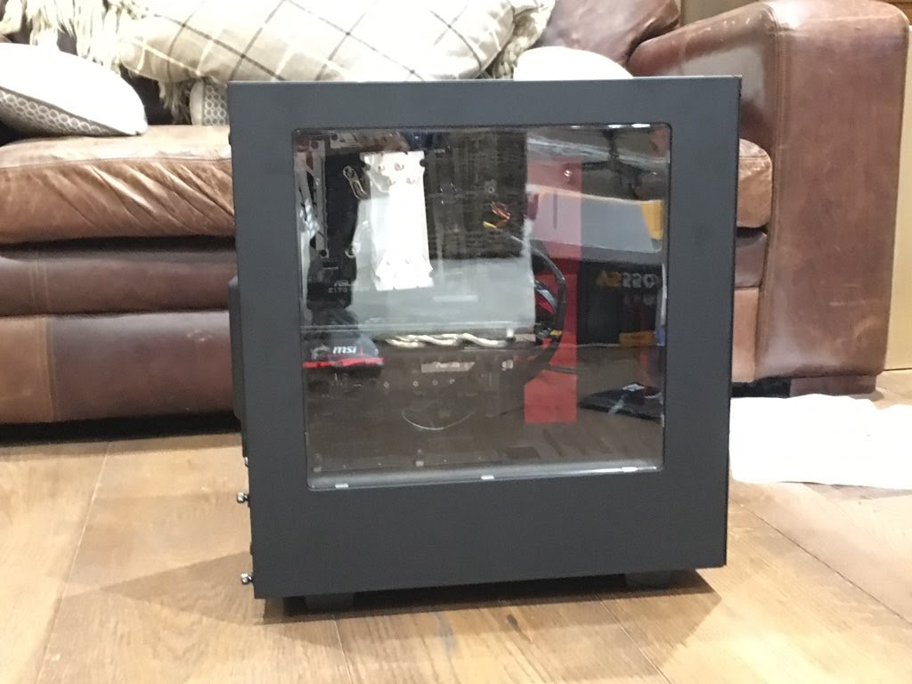

Computer Building 3
American PC

I built this computer in America so that when I went on holiday I could code and play games.
It is essentially a slightly cheaper, slightly slower version of the first PC I built.
It has a AMD FX-8320 processor, a GTX 960 GPU and was built in a black Mid-Tower NZXT Phantom 410 case, I really like NZXT cases! The PC runs Windows 10 and was built in the summer of 2015
Friend's PC
One of my best friends wanted to have a desktop PC to play games on. He didn't want to have to spend a ridiculously large amount of money on it but he still wanted it to be reasoanbly quick. I recommend that he build one himself, as he had never built a PC before, he asked if I could help, which I happily accepted. I recommended to him some good, but not too expensive, PC parts. He went away and chose them and he received them for his birthday.
Luckily, the parts he chose were very similar, if not exactly the same, to ones that I had used in the past. In fact, his PC was identical to the one I built in "Computer Building 2" except he had a GTX 1060 and I had a GTX 1070 - although they are VERY similar.
The build started of well. We got the power supply with no hassle and moved on to installing the CPU. I let him put the CPU in as this is the best bit! We then installed the RAM and the hardest bit, the CPU cooler.
Unfortunately, we noticed that the motherboard was slightly bent. There were 2 plausible ways that this could have occured, Firstly, that it had come like this out the box, or secondly, we had tightened the CPU Cooler on too tight. I thought the latter was more likely, so I loosened the cooler and it helped the bending.
After some googling, we determined that the bending was only minor and it wasn't near the CPU, so if it snapped then it wouldn't damaged the most expensive componenent. Also, according to online forums, it didn't matter, as long as there were no cracks and everything functioned correctly.
By now I had to go home, so we paused the PC building for the night
My friend and his dad continued the build that weekend. They installed the motherboard into the case and the SSD into it's tray.
Annoyingly, their GPU woudln't fit into the case, so they messaged me, asking me about it.
This had happened to me in one of my PC builds, they would have to removed the red bar that is visible in the right of the photo above. By the time I had told them they had figured it out.
Unluckily, they had some issues installing Windows. The Motherboard wouldn't boot from the Windows 10 installation USB. They messaged me about it, and I told them to manually set it to prioritise booting from the USB in the motherboard's BIOS. They did this and it didn't work, but apparently they just rebooted it over and over and it worked. This happened to me once when I was re-installing Windows on my first PC. But Hey! That's Windows for you!